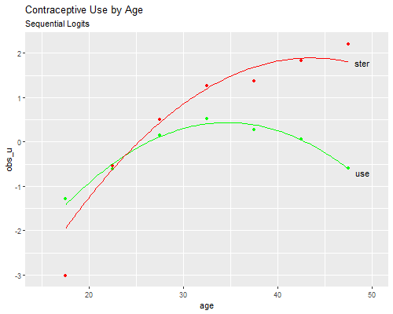

{% include r.css %}


<div id="c6s4" class="section level2 first">
<h2 class="first">6.4 The Sequential Logit Model</h2>
<p>We now fit the <em>hierarchical</em> logit model described in the
notes. Because the term hierarchical has come to be closely associated
with multilevel models, I now prefer calling this model the
<em>sequential</em> logit model, reflecting the fact that the model
proceeds as if decisions were made in a sequence of stages.</p>
<p>This model is not to be confused with the <em>nested</em> logit
model, a term used in econometrics to refer to a random-utility model
where the errors within subsets of choices are correlated and the
predictors include alternative-specific variables. Our approach is much
simpler, but doesn’t have a strict utility maximization
interpretation.</p>
<p>We assume that women first decide whether to use a method or not, and
model this choice using a conventional logit model. We then focus
exclusively on women who use a method, and model their choice of
sterilization or another method using another conventional logit model.
(I told you this would be simpler :)</p>
<div id="the-decision-to-use" class="section level3">
<h3>The Decision to Use</h3>
<p>We continue to use the same dataset as in the previous sections.
<span class="stata">All we need to get started is a variable to identify
users of contraception.</span></p>
<pre class="r"><code>&gt; library(haven)
&gt; library(dplyr)
&gt; library(tidyr)
&gt; cuse &lt;- read_dta(&quot;https://grodri.github.io/datasets/elsalvador1985.dta&quot;) |&gt; 
+   mutate(ageg=as_factor(ageg), age=12.5 + 5*as.numeric(ageg), agesq=age^2) |&gt;
+   pivot_wider(names_from=cuse, values_from=cases) 
&gt; names(cuse)[4:6] &lt;- c(&quot;ster&quot;, &quot;other&quot;, &quot;none&quot;)</code></pre>
<p>We then model the logit of the probability of using contraception as
a quadratic function of age:</p>
<pre class="r"><code>&gt; use &lt;- glm(cbind(ster+other, none) ~ age + agesq, family=binomial, data=cuse)
&gt; summary(use)</code></pre>
<pre><code>
Call:
glm(formula = cbind(ster + other, none) ~ age + agesq, family = binomial, 
    data = cuse)

Deviance Residuals: 
       1         2         3         4         5         6         7  
 0.97930  -1.35134   0.35492   1.33848  -1.18100   0.09934   0.11041  

Coefficients:
              Estimate Std. Error z value Pr(&gt;|z|)    
(Intercept) -7.1803625  0.5215578  -13.77   &lt;2e-16 ***
age          0.4397399  0.0330984   13.29   &lt;2e-16 ***
agesq       -0.0063448  0.0004992  -12.71   &lt;2e-16 ***
---
Signif. codes:  0 &#39;***&#39; 0.001 &#39;**&#39; 0.01 &#39;*&#39; 0.05 &#39;.&#39; 0.1 &#39; &#39; 1

(Dispersion parameter for binomial family taken to be 1)

    Null deviance: 218.8388  on 6  degrees of freedom
Residual deviance:   6.1195  on 4  degrees of freedom
AIC: 57.07

Number of Fisher Scoring iterations: 3</code></pre>
<pre class="r"><code>&gt; b &lt;- coef(use)
&gt; -0.5*b[&quot;age&quot;]/b[&quot;agesq&quot;]</code></pre>
<pre><code>     age 
34.65384 </code></pre>
<p>The estimates indicate that the odds of using contraception
(sterilization or other method as opposed to no method) increase with
age to reach a maximum at 34.7 and then decline. This is more easily
appreciated in a graph, which we will do below.</p>
</div>
<div id="the-choice-of-method-among-users" class="section level3">
<h3>The Choice of Method Among users</h3>
<p>For the second step we look just at current users, and model the
logit of the conditional probability of being sterilized given that the
woman uses contraception as a quadratic function of age:</p>
<pre class="r"><code>&gt; ster &lt;- glm(cbind(ster, other) ~ age + agesq, family=binomial, data=cuse)
&gt; summary(ster)</code></pre>
<pre><code>
Call:
glm(formula = cbind(ster, other) ~ age + agesq, family = binomial, 
    data = cuse)

Deviance Residuals: 
      1        2        3        4        5        6        7  
-2.1069   0.5844   0.6137   0.4552  -1.9305  -0.2530   1.2722  

Coefficients:
             Estimate Std. Error z value Pr(&gt;|z|)    
(Intercept) -8.868692   1.065769  -8.321  &lt; 2e-16 ***
age          0.494245   0.066797   7.399 1.37e-13 ***
agesq       -0.005674   0.001011  -5.613 1.99e-08 ***
---
Signif. codes:  0 &#39;***&#39; 0.001 &#39;**&#39; 0.01 &#39;*&#39; 0.05 &#39;.&#39; 0.1 &#39; &#39; 1

(Dispersion parameter for binomial family taken to be 1)

    Null deviance: 302.264  on 6  degrees of freedom
Residual deviance:  10.774  on 4  degrees of freedom
AIC: 52.097

Number of Fisher Scoring iterations: 4</code></pre>
<pre class="r"><code>&gt; b &lt;- coef(ster)
&gt; -0.5*b[&quot;age&quot;]/b[&quot;agesq&quot;]</code></pre>
<pre><code>     age 
43.55567 </code></pre>
<p>The estimates indicate that the odds of begin sterilized among users
(sterilization as opposed to other method) increase with age, but at a
decreasing rate, reaching a maximum at 43.6. Again, a picture is worth a
tousand words and we will plot these curves below.</p>
</div>
<div id="comparing-model-likelihoods-and-deviances"
class="section level3">
<h3>Comparing Model Likelihoods and Deviances</h3>
<p>To obtain the log-likehood for the sequential model we simply add the
log-likelihoods for each stage. We can then compare this to the
log-likelihood for a saturated multinomial model to get a sequential
logit deviance. We can use <code>multinom()</code> for the saturated
multinomial, but we can also run two sequential logits with age as a
factor using <code>glm()</code>. Because these functions use individual
and grouped data log-likelihoods, as noted earlier, we will stick with
<code>glm()</code> for simplicity.</p>
<pre class="r"><code>&gt; use_sat &lt;- glm(cbind(ster + other, none) ~ ageg, family=binomial, data=cuse)
&gt; ster_sat &lt;- glm(cbind(ster, other) ~ ageg, family=binomial, data=cuse)
&gt; dev = -2*(logLik(use) + logLik(ster) - logLik(use_sat) - logLik(ster_sat))
&gt; data.frame(deviance=dev, df=8, pvalue=pchisq(dev, 8, lower.tail=FALSE))</code></pre>
<pre><code>  deviance df     pvalue
1 16.89298  8 0.03124295</code></pre>
<p>The deviance of 16.89 on 8 d.f. is a bit better (lower) than the
comparable multinomial logit model of <a href="c2s6">Section 6.2</a>
with linear and quadratic effects of age, which was ??? although the
difference is small and we have some evidence that the model does not
fit the data. We will build a plot to examine where the lack of fit
comes from.</p>
</div>
<div id="plotting-observed-and-fitted-logits" class="section level3">
<h3>Plotting Observed and Fitted Logits</h3>
<p>We now produce a figure similar to 6.1, but for the sequential logit
model. We could produce <em>observed</em> logits from logit models
treating age as a factor with seven levels, but we can easily compute
these “by hand”.</p>
<pre class="r"><code>&gt; cuse &lt;- mutate(cuse, obs_u=log((ster+other)/none), obs_s=log(ster/other))</code></pre>
<p>We can then plot observed versus fitted logits for each equation:</p>
<pre class="r"><code>&gt; library(ggplot2)
&gt; fit_u &lt;- function(x) cbind(rep(1,length(x)),x,x^2) %*% coef(use)
&gt; fit_s &lt;- function(x) cbind(rep(1,length(x)),x,x^2) %*% coef(ster)
&gt; png(&quot;fig62r.png&quot;, width=500, height=400)
&gt; ggplot(cuse, aes(age, obs_u)) + geom_point(color=&quot;green&quot;) + 
+   geom_point(mapping=aes(age, obs_s), color=&quot;red&quot;) +
+   geom_function(fun=fit_u, xlim=c(17.5, 47.5), color=&quot;green&quot;) + 
+   geom_function(fun=fit_s, xlim=c(17.5, 47.5),  color=&quot;red&quot;) + xlim(c(15,50)) +
+   annotate(geom=&quot;text&quot;, x=49, y=fit_u(48), label=&quot;use&quot;)  +
+   annotate(geom=&quot;text&quot;, x=49, y=fit_s(48), label=&quot;ster&quot;) +
+   ggtitle(&quot;Contraceptive Use by Age&quot;, subtitle=&quot;Sequential Logits&quot;)
&gt; dev.off()</code></pre>
<pre><code>png 
  2 </code></pre>
<p></p>
<p>We see that the two quadratics fit reasonably well, except for
overestimating the probability of sterilization among contraceptive
users at ages 15 to 19, a problem similar to that noted in the
multinomial logit model. We could easily remedy this deficiency by
adding a dummy variable for teenagers in the second-stage model.</p>
<p><em>Exercise</em>. In the next section we will study ordered logit
models. You may want to try fitting an ordered logit model to this
dataset treating the three choices as ordered in terms of contraceptive
effectiveness.</p>
<p><small>Updated fall 2022</small></p>
</div>
</div>
